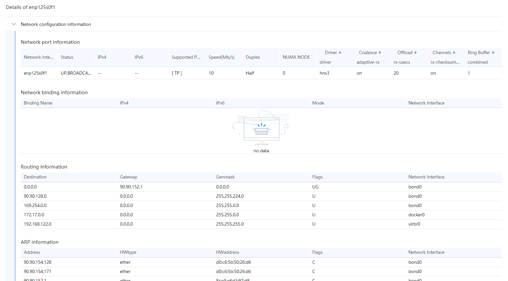

Prerequisites
A network I/O diagnosis task has been created and analyzed.
Procedure
- In the Project Management area, click
 before the target project and analysis task.
before the target project and analysis task.The node list is displayed.
- Click the name of the target node to view the analysis result.
Click the node name. The Connectivity dial test tab page is displayed by default, as shown in Figure 1. Table 1 describes the parameters.

- If the connectivity dial test is successful, the dialing test KPI chart is connected. Click the server. The configuration information is displayed. If the connectivity dialing test fails, the dialing test KPI is disconnected. The dialing test failure cause and suggestions are displayed.
- After the dialing test is successful, click Configuration information under the server icon. The server configuration is displayed in a dialog box.
Table 1 Parameters on the Connectivity dial est tab page Parameter
Description
Sent packets
Number of sent packets.
Received packets
Number of received packets.
Packets loss rate (%)
Data packet loss ratio.
Maximum
The maximum delay.
Minimum
The minimum delay.
Average
Average delay.
Mean deviation
Average deviation delay.
Route number
Sequence number of a route.
Router device IP
IP address of the routing device.
Response time 1 (ms)
Route response time.
Response time 2 (ms)
Route response time.
Response time 3 (ms)
Route response time.
Figure 2 Configuration information
Table 2 Configuration parameters Parameter
Description
Destination
Local address.
Gateway
Gateway information.
Genmask
Mask information.
Flags
Network interface status.
Network Interface
Network port information.
Address
Network address.
HWtype
NIC type.
HWaddress
MAC address.
When the TCP dial test is selected, the TCP test page is displayed, as shown in Figure 3. Table 3 describes the parameters.
Table 3 TCP dialing test parameters Parameter
Description
Connection information
Connection ID
ID of the connection during the dialing test.
Client IP
IP address of the client in the dialing test.
Client port
Client port in the dialing test.
Server IP
IP address of the server in the dialing test.
Server port
The server port number during a dialing test.
Dial test statistics
Connection ID
ID of the connection during the dialing test.
Interval (s)
Interval at which data is sampled during a dialing test.
Transferred data volume (MB)
Amount of data transferred within a specified interval.
Bandwidth (Mbit/s)
Bandwidth within a specified interval.
Retransmission
Whether data is retransmitted due to a failure.
Window size (MB)
Size of the TCP data window during a dialing test.
Operating
Where detailed information is displayed. You can click to view the details.
When UDP dial test is selected, the page shown in Figure 4 is displayed. Table 4 describes the parameters.
Table 4 UDP dial test parameters Parameter
Description
Connection information
Connection ID
ID of the connection during the dialing test.
Client IP
IP address of the client in the dialing test.
Client port
Client port in the dialing test.
Server IP
IP address of the server in the dialing test.
Server port
The server port number during a dialing test.
Dial test statistics
Connection ID
ID of the connection during the dialing test.
Interval (s)
Interval at which data is sampled during a dialing test.
Transferred data volume (MB)
Amount of data transferred within a specified interval.
Bandwidth (Mbit/s)
Bandwidth within a specified interval.
Delay jitter (ms)
Latency jitter time.
Lost data packets/Total data packets
Number of lost data packets during data transmission and the total number of data packets transferred.
Operating
Where detailed information is displayed. You can click to view the details.
Packets loss rate (%)
Packet loss rate.
- Click the Network load monitoring tab.
View the analysis results on the Network load monitoring tab, as shown in Figure 5. Table 5 describes the parameters.
- In the CPU Usage area, you can select CPU core or NUMA node from the drop-down list to view details.
- You can select a NIC from the drop-down list to view the network throughput diagram.
Table 5 Network load monitoring parameters Parameter
Description
CPU Usage
CPU core
CPU core
NUMA NODE
Numa node
%user
Percentage of CPU time occupied when the system is running in user mode.
%nice
Percentage of CPU time occupied by the process that has changed the priority when the system is running in user mode.
%system
Percentage of the CPU time occupied when the system is running in kernel mode (excluding the hardware interrupt time and software interrupt time).
%iowait
Percentage of CPU time during which the CPU is idle and waits for drive I/O operations.
%irq
Percentage of CPU time spent on service hardware interrupts.
%soft
Percentage of CPU time spent on service software interrupts.
%idle
Percentage of CPU time during which the CPU is idle and the system has no unfinished drive I/O request.
CPU load
runq-sz
Length of the running queue, that is, the number of tasks to be run.
plist-sz
Number of tasks in the task list.
ldavg-1
Average system load in the last minute.
ldavg-5
Average system load in the last five minutes.
idavg-15
Average system load in the last 15 minutes.
blocked
Number of blocked tasks waiting for I/O operations.
Memory usage
total (KB)
Total available memory size of the system.
free (KB)
Available memory size.
used (KB)
Size of used memory.
%used
Percentage of the used memory to the total memory.
avail (KB)
Size of the memory that can be used by applications.
buffers (KB)
Buffer size.
cached (KB)
Size of the memory in the cache.
Network I/O Statistics
IFACE
Network port name.
rx (pck/s)
Total number of packets received per second.
tx (pck/s)
Total number of packets sent per second.
rx (KB/s)
Total number of bytes received per second.
tx (KB/s)
Total number of bytes sent per second.
In the Network I/O Statistics area on the Network load monitoring tab page, click a NIC. The details page is displayed.
Figure 6 NIC information
Table 6 Parameters on the network adapter information page Parameter
Description
Network Settings
Network Interface
NIC name.
Status
NIC status.
IPv4
Whether IPv4 is supported.
IPv6
Whether IPv6 is supported.
Supported Port
Supported ports.
Speed (Mbit/s)
Network rate.
Duplex
Working type of the NIC.
NUMA NODE
Bound NUMA node.
driver
Driver name.
version
Graphics card driver version.
firmware version
Software version.
adaptive-rx
Setting of the dynamic aggregation for a receiving queue.
adaptive-tx
Setting of the dynamic aggregation for a sending queue.
rx-usecs
Number of microseconds after at least one packet is received before an interrupt is generated.
tx-usecs
Number of microseconds after at least one packet is sent before an interrupt is generated.
rx-framcs
Number of packets sent before an interrupt is generated.
rx-checksumming
Setting of the checksum function for received packets.
tx-checksumming
Setting of the checksum function for sent packets.
scatter-gather
Setting of the scatter/gather function.
TSO
Setting of the TCP segmentation offload (TSO) function.
UFO
Setting of the UDP fragmentation offload (UFO) function.
LRO
Setting of the large receive offload (LRO) function.
GSO
Setting of the generic segmentation offload (GSO) function.
GRO
Setting of the generic receive offload (GRO) function.
Tx
Size of the sent cache ring buffer, in bytes.
Rx
Size of the received cache ring buffer, in bytes.
Binding Name
Name of the bound NIC.
Mode
Mode information
Destination
Local address.
Gateway
Gateway information.
Genmask
Mask information.
Flags
Network interface status.
Address
Network address.
HWtype
NIC type.
HWaddress
MAC address.
Flags
Network interface status.
Interrupt and XPS/RPS information.
Hardware Interrupt ID
ID of a hardware interrupt.
Device Info
Device WWPN information.
PCIe BDF Number
BDF number of a PCIe device.
Interrupt Event Name
Name of an interrupt event.
Interrupt Core Pinning Info
Information about the pinning of interrupts and cores.
Interrupt Frequency (Times/s)
Interrupt frequency.
Network Device
Name of a network device.
xps_cpus
CPU bound to the XPS.
rps_cpus
CPU bound to the RPS.
rps_flow_cnt
Maximum number of flows in each queue.
Software Interrupt Info
Software interrupt information.
CPU Core
CPU core
Cores Bound to Hardware Interrupts
Number of CPU cores bound to hardware interrupts.
Cores Bound to XPSs
Number of CPU cores bound to XPSs.
Cores Bound to RPSs
Number of CPU cores bound to RPSs.
Software and Hardware Interrupt Frequency (times/s)
Frequency of software and hardware interrupts.
Processes that occupies the network I/O
Local Interface
Local network port.
Protocol
Supported network protocol type.
Local IP
Local IP address.
Local Port
Local port.
Remote IP
Peer IP address.
Remote Port
Peer port.
PID
ID of a process.
Command
Detailed operation information.
- Click the Packet loss diagnosis tab.
View the analysis results of packet loss diagnosis, as shown in Figure 7. Table 7 describes the parameters.
Click Viewing Troubleshooting Suggestions to view the troubleshooting suggestions provided by the system.
If the icon is displayed next to a parameter, you can click the icon to search for the parameter.
Table 7 Packet loss diagnosis parameters Parameter
Description
Packet loss occurred on the NIC hardware and driver
IFACE
Network port name.
rxerr/s
Number of damaged packets received per second.
txerr/s
Total number of errors per second when packets are sent.
coll/s
Number of conflicting packets per second.
rxdrop/s
Number of data packets discarded per second after they are sent to the ring buffer.
txdrop/s
Number of data packets discarded per second after the received data packets enter the ring buffer.
txcarr/s
Number of carrier errors sent per second.
rxfram/s
Number of frame alignment errors per second when packets are received.
rxfifo/s
Number of first input first output (FIFO) overflow errors per second when packets are received.
txfifo/s
Number of FIFO overflow errors per second when packets are sent.
Packet loss occurred in the protocol stack cache queue.
Queue (CPU core)
CPU core queue.
received/s
Protocol stack cache received per second.
drop/s
Protocol stack cache discarded per second.
drop rate (%)
Packet loss rate.
Packet loss occurred in the kernel call stack.
Function Name
Name of the invoked function.
Module
Name of the invoked module.
Protocol Type
Protocol type of the data packet.
Discarded SKBs
Number of discarded SKB packets.
Call Stack
Call stack information.
- Click the Network Packet Capture tab.
View the analysis content of network packet capture, as shown in Figure 8. Table 8 describes the parameters.
Table 8 Network packet capture parameters Parameter
Description
Timestamp
Time when packets are captured.
Source MAC address.
iBMC MAC address.
Target MAC address.
Destination MAC address.
Protocol Type
Protocol type.
Length
Length of the captured packet.
Source IP Address
Source IP address.
Source Port
Source port number.
Destination IP Address
Destination IP address.
Destination Port
Destination port number.
Packet header information
Packet header information obtained through packet capture.